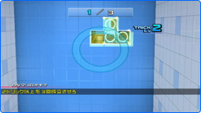
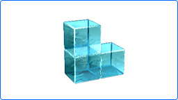
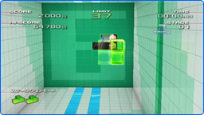

--
キーズファクトリーさんでは、これまで任天堂ハード向けにゲームアクセサリーを作られていらっしゃいますよね。今回、Wiiウェアのゲームを開発されて、いかがでしたか？
齋藤
任天堂さんとゲームを作らせていただくのは今回が初めてだったんですが、非常に楽しかったです。開発している間は試行錯誤の連続でしたが、任天堂の方々にいろいろとアドバイスをいただきながら「どうすればもっとお客様に喜んでもらえるのか」をただひたすら考えていたら、あっという間に時間が過ぎていきました。
--
今回の開発は、どういうところからスタートされたんでしょう？
齋藤
最初は、Wiiリモコンを回転させてアナをすりぬけるゲームとして考えはじめました。ところが、Wiiリモコンでは縦の回転が検出できない（※）ことがわかって、いったん企画が頓挫してしまったんです。それでもなんとかならないかと考えていたら、実は通常のキー操作の方が、ストイックなアクションパズルになるのではと いうことに気付きまして、今の状態に落ち着きました。
※Wiiリモコンを縦に持ち、そのまま縦軸に回転させても検出することができません。
--
試行錯誤だったという開発の中で、印象深いエピソードは？
齋藤
「トリック」のルールが生まれた時のことが印象に残っています。
基本的に壁が迫ってくる前にカタマリを回転させるというゲームですが、うまくなればなるほど早く操作ができるようになって、壁のアナをすりぬけるまでの時間がつまらなくなってしまうというジレンマがあったんです。もちろん、難易度選択の仕組みを作って回避することもできたかもしれませんが、できる限りそちらの方向には逃げたくないなと。初心者でも熟練者でも、同じ条件でそれぞれのプレイスタイルで楽しめるようにしたいと考えていました。
なかなかいいアイデアが生まれなかったのですが、あるとき開発スタッフの1人が「すべてのアナにシルエットを一致させてからアナをすりぬける」という自分だけのルールを決めてプレイしていたんです。これは実際のゲームのルールとしても使えるんじゃないかと思い、それを煮つめていった結果として生まれたのが「トリック」です。
このルールのおかげでカタマリがアナに到達するまでの時間の使い方にも戦略性が生まれて、よりプレイの幅を広げることができたのではないかと思っています。

--
スピードを上げて気持ちよくすりぬけよう！「コンボ」や「トリック」を決めよう！と欲張って、ついつい壁にぶつかってしまい、もどかしい思いをしました（笑）。
齋藤
壁をすりぬけるまで、できるだけカタマリをたくさん動かしてほしいと思っていましたので、基本的にたくさんカタマリを動かすほど高評価になるようなシステムになっています。
「コンボ」や「トリック」をねらうには、すでにシルエットが一致して壁をすりぬけられる状態になっていても、さらにカタマリを動かす必要があるので悩ましいところですね。しかし、連続で「コンボ」や「トリック」を決めるとかなりの高得点になるので、カタマリをどんどん回転させて、そのもどかしさを乗り越えていただけたらと思います。
--
「ぜひここを注目してほしい！」という部分を挙げるとすれば？
齋藤
「全部！」……と言いたいところですが、「ぜひここを」ということであれば、カタマリのプルプルした感じです。あの動きを入れることで、それまで非常に無機質だったカタマリに命が宿ったと思っています。カタマリをたくさん回転させて、あのプルプル感を楽しんでいただきたいです。

--
確かにあのカタマリには、ゼリーのような独特のプルプル感がありますね。これはどういう経緯で？
齋藤
開発途中で任天堂の方から「カタマリに色気がない」というご意見をいただいたんです。確かに、あらためて見てみると無機質な世界観で、生命感がないというか、エネルギーがないというか、どこか物足りなさを感じていました。
どうすればその「色気」が出るのかと悩んだんですが、ここは人の五感（味覚・触覚・視覚・聴覚・嗅覚）という基本に立ち返ろうということになり、その中でもいちばんわかりやすいところで「さわりたくなるようにしよう」と考えました。そして、その辺に置いてあってさわりたくなるものといえば、プルプルしていたり、フカフカしていたりといった質感のものではないかと。
そんな流れで、現在のゼリー状のプルプルしたカタマリになりました。実際に存在していたら思わずつつきたくなるような質感になったかなと思っていますが、いかがでしょうか。みなさんのご意見もうかがいたいです。
--
実際にプレイしてみると、ゲームのルールはシンプルですが、かなり深く遊べる印象があります。特におすすめの遊び方といえば、どこでしょうか？
齋藤
さきほども出ましたが、「トリック」の存在がゲームを深くしたと思っています。「トリック」を使えば、同じアナをすりぬける場合でも手順ひとつでスコアが変わってきます。同じトリックでも、トリックの決め方によって点数が変わるということですね。特に「ステージクリア」モードでより高い得点を目指そうとすると、かなりやりこむことができるんじゃないかと思います。

--
なるほど、同じステージでも「トリック」の決め方で得点が変わってくるんですね。一方で、私のような「新米プ
レイヤー」にとって、上手に壁をすりぬけるためのコツみたいなものはありますか？
齋藤
人によるのかもしれませんが、急いで適当にカタマリを回転させるよりも、いったん冷静になってじっくりと回転させた方がすんなりといくことが多いような気がします。
とはいえ、壁が近づいてくると非常にあせってしまうと思います。そんな時は、ゲームを一時停止してカタマリの形を確認できる「カタマリチェックモード」（※）を活用していただくといいのではないでしょうか。
※カタマリチェックモードはステージ開始時にのみ選択可能です。
--
それでは最後に、読者のみなさんへのメッセージをお願いします。
齋藤
はじめは少し難しく感じる方もいらっしゃるかもしれませんが、あまり気負わずにプレイしていただければ、いつの間にかハマって楽しめるようになると思いますので、ぜひダウンロードをお願いします！